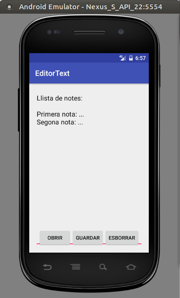

2.1 - Exemple
Anem a treballar sobre un exercici senzill, ampliant el que hem fet fins ara. Mostrarem un EditText, però ara podrem fer anotacions que es podran guardar en un únic fitxer anomenat notes.txt, i així no caldrà demanar ni el nom del fitxer ni navegar.
Hi haurà tres botons:
- Obrir: obrirà el contingut del fitxer notes.txt i el mostrarà en el EditText
- Guardar: guardarà el contingut del EditText en el fitxer notes.txt.
- Esborrar: únicament esborrarà el contingut del EditText.
Aquest podria ser l'aspecte:

El Activity_Main.xml: ara contindrà, a banda de l'EditText, un LinearLayout horitzontal situat a la banda de baix, i que contindrà els 3 botons.
<RelativeLayout xmlns:android="http://schemas.android.com/apk/res/android"
xmlns:tools="http://schemas.android.com/tools"
android:id="@+id/activity_main"
android:layout_width="match_parent"
android:layout_height="match_parent"
tools:context="com.example.editortext.MainActivity">
<EditText
android:text=""
android:id="@+id/text"
android:layout_width="match_parent"
android:layout_height="match_parent"
android:inputType="textMultiLine"
android:gravity="top" />
<LinearLayout
android:orientation="horizontal"
android:layout_width="wrap_content"
android:layout_height="wrap_content"
android:layout_alignParentBottom="true"
android:gravity="center_horizontal"
android:layout_centerHorizontal="true">
<Button
android:layout_width="wrap_content"
android:layout_height="wrap_content"
android:text="Obrir"
android:id="@+id/obrir" />
<Button
android:layout_width="wrap_content"
android:layout_height="wrap_content"
android:text="Guardar"
android:id="@+id/guardar" />
<Button
android:layout_width="wrap_content"
android:layout_height="wrap_content"
android:text="Esborrar"
android:id="@+id/esborrar" />
</LinearLayout>
</RelativeLayout>
En el programa principal, a banda de col·locar les coses, ens definim la variable PATH que contindrà la ruta on volem col·locar el fitxer, i també el tractament dels 3 botons.
Podeu comprovar que mirem primer l'existència de la ruta (podria ser que no existira el subdirectori files, i aleshores el crearíem) i després es llig el fitxer línia a línia (amb un BufferedReader) i es col·loca en el EditText.
import android.support.v7.app.AppCompatActivity;
import android.os.Bundle;
import android.view.View;
import android.widget.Button;
import android.widget.EditText;
import java.io.BufferedReader;
import java.io.File;
import java.io.FileNotFoundException;
import java.io.FileReader;
import java.io.FileWriter;
import java.io.IOException;
import java.io.PrintWriter;
public class MainActivity extends AppCompatActivity {
String PATH = null;
@Override
protected void onCreate(Bundle savedInstanceState) {
super.onCreate(savedInstanceState);
setContentView(R.layout.activity_main);
PATH = "/data/data/" + getPackageName() + "/files";
final EditText text = (EditText) findViewById(R.id.text);
Button button1= (Button) findViewById(R.id.obrir);
button1.setOnClickListener(new View.OnClickListener() {
@Override
public void onClick(View v) {
try {
File dir = new File(PATH);
if (!dir.exists())
dir.mkdir();
BufferedReader f = new BufferedReader(new FileReader(new File(dir,"notes.txt")));
String cont = "";
String linia = f.readLine();
while (linia!=null) {
cont += linia + "\n";
linia=f.readLine();
}
text.setText(cont);
f.close();
} catch (FileNotFoundException e) {
e.printStackTrace();
} catch (IOException e) {
e.printStackTrace();
}
}
});
Button button2= (Button) findViewById(R.id.guardar);
button2.setOnClickListener(new View.OnClickListener() {
@Override
public void onClick(View v) {
try {
File dir = new File(PATH);
if (!dir.exists())
dir.mkdir();
PrintWriter f = new PrintWriter(new FileWriter(new File(dir,"notes.txt")));
f.write(text.getText().toString());
f.close();
} catch (FileNotFoundException e) {
e.printStackTrace();
} catch (IOException e) {
e.printStackTrace();
}
}
});
Button button3= (Button) findViewById(R.id.esborrar);
button3.setOnClickListener(new View.OnClickListener() {
@Override
public void onClick(View v) {
text.setText("");
}
});
}
}
Llicenciat sota la Llicència Creative Commons Reconeixement NoComercial CompartirIgual 2.5